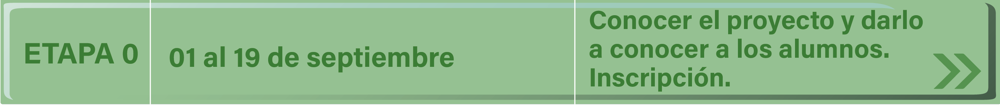
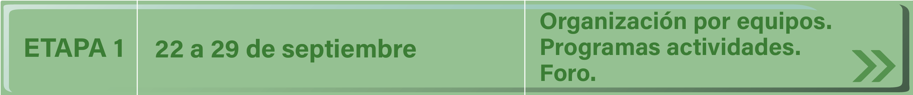
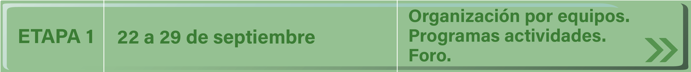
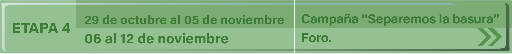
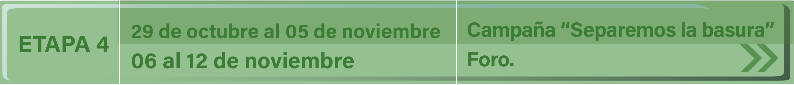

Inicio
En esta experiencia que apenas inicia se puede decir que la educación actual contempla una nueva forma de llegar al aprendizaje, desde la propia perspectiva que estamos viviendo haciendo uso de los medios electrónicos que permiten la comunicación de los alumnos y profesores a grandes distancias y que fortalece los esfuerzos educativos, para que los maestros conduzcan a los alumnos hacia el aprendizaje en el que ellos participen a través del trabajo en equipo, la investigación, el intercambio de experiencias y opiniones que forman el marco contextual en el que los alumnos llegarán a construir conocimientos de calidad.
El desarrollo del proyecto deberá enmarcarse en la utilización de diferentes tecnologías que proporcionan información diversa: documentos, consulta con expertos, proyección de videos, búsquedas en internet, experiencias a través del correo electrónico y foros de discusión.
De los trabajos elaborados por los participantes.
- Deberán desarrollar cada una de las actividades de cada etapa fundamentando sus mensajes de acuerdo a fuentes consultadas.
- Sus aportaciones finales deberán ser creaciones de los alumnos y enviarse dentro del tiempo programado para esa etapa.
Inicio
En esta experiencia que apenas inicia se puede decir que la educación actual contempla una nueva forma de llegar al aprendizaje, desde la propia perspectiva que estamos viviendo haciendo uso de los medios electrónicos que permiten la comunicación de los alumnos y profesores a grandes distancias y que fortalece los esfuerzos educativos, para que los maestros conduzcan a los alumnos hacia el aprendizaje en el que ellos participen a través del trabajo en equipo, la investigación, el intercambio de experiencias y opiniones que forman el marco contextual en el que los alumnos llegarán a construir conocimientos de calidad.
El desarrollo del proyecto deberá enmarcarse en la utilización de diferentes tecnologías que proporcionan información diversa: documentos, consulta con expertos, proyecciones de videos, búsqueda en internet, experiencias a través del correo electrónico y foros de discusión.
De los trabajos elaborados por los participantes.
- Deberán desarrollar cada una de las actividades de cada etapa fundamentando sus mensajes de acuerdo a fuentes consultadas.
- Sus aportaciones finales deberán ser creaciones de los alumnos y enviarse dentro del tiempo programado para esa etapa.
Presentación
El proyecto “Conociendo la basura” invita a todos los maestros con sus alumnos, de tercero a sexto grado de educación primaria, a participar en la realización de actividades muy interesantes que les permitirán conocer diversos aspectos de este tema.
El alumno, guiado por su maestro, podrá aportar sus opiniones, las cuales serán conocidas por todos los participantes a través de foros de discusión y la elaboración de un blog del proyecto.
Para el desarrollo de este proyecto, se requiere en forma imprescindible de la valiosa cooperación de los profesores de grupo, del responsable tecnológico escolar (RTE) así como de la participación de quienes realizarán las actividades directamente: los alumnos.
Durante el desarrollo del proyecto podrán establecer comunicación con el departamento de tecnología educativa para resolver dudas e inquietudes, por medio del correo electrónico: basura@sin.nuevaescuela.mx.
Actividades
Durante el desarrollo del proyecto el alumno realizará una gama de actividades que lo llevarán a lograr los propósitos antes mencionados.
A continuación algunas actividades a realizar durante el proyecto:
- La transmisión de los videos “El monstruo de la basura”, "Una aventura para salvar el planeta" y “ ¿Por qué el reciclaje es tan importante?”.
- Separar basura en el centro educativo.
- Visitar un centro de acopio de materiales para reciclar.
- Elaborar un papel reciclado.
- Realizar búsquedas en Internet que le servirán para formarse una idea general acerca de la basura.
- Elaborar un cuento relacionado con el tema del proyecto.
- Publicar evidencias de las actividades en un blog...
Ubicación curricular
Campo formativo Lenguajes.
3er grado
Desarrolla una historia con una secuencia causal de hechos derivados de un conflicto inicial que se soluciona al final.
4to grado.
Escribe un cuento de manera colectiva y elabora los personajes con objetos cotidianos y realiza una presentación frente a un público.
5º grado
Realiza lecturas en voz alta de guiones teatrales y los representa en colectivo, mediante el empleo del cuerpo, procurando respetar los elementos que le permiten ser escenificados, tales como la presencia de acción, el conflicto, los diálogos, los personajes, las acotaciones y la tipografía empleada para distinguirlos.
6º grado.
Combina formas, colores, texturas, sonidos, movimientos y gestos para representar personajes, lugares y situaciones y los guarda en video o los presenta en vivo al montar una exposición en la que se invite a familiares y el resto de la comunidad escolar, para su apreciación y disfrute.
Campo formativo Ética, Naturaleza y Sociedades
3er y 4to grado
Valoración de los ecosistemas: Características del territorio como espacio de vida y las interacciones de la comunidad con los ecosistemas, para su preservación responsable y sustentable.
5º grado.
Elige y pone en práctica, de manera crítica, acciones de bienestar común para la regeneración y preservación de su biodiversidad en la vida cotidiana, promoviendo que autoridades, personas y familias de su comunidad, colaboren responsablemente para el logro de tal fin.
6º grado
Propone y pone en práctica, de manera crítica, con juicio ético y de acuerdo con sus posibilidades, acciones de bienestar común para la regeneración reservación de la biodiversidad en la vida cotidiana; reflexionando acerca de los derechos de la naturaleza.
Calendario
 


 


"Etapa 0"
Actividad 1
En esta etapa el profesor conoce el proyecto, platica con sus alumnos y juntos deciden su participación y llenado del formato de inscripción.
Revisa y prueba el buen funcionamiento de las tecnologías, se familiariza con el manejo del equipo computacional en cuanto a uso de procesador de textos, correo electrónico, blog, foros.
Él y sus alumnos se responsabilizan asumiendo el compromiso de participar en el proyecto.
Se sugiere que la inscripción sea grupal y posteriormente se organice en equipos.
Se sugiere que el profesor responsable del aula de medios cree un blog para ir subiendo los productos/evidencias de las actividades realizadas por el grupo.
"Etapa 1"
Actividad 1
En este momento corresponde al profesor organizar a los alumnos. El docente tiene la libertad para decidir qué dinámica seguirán para que participe todo el grupo.
De igual manera será la forma de distribución de los alumnos para el desarrollo de las actividades. Se aconseja la organización por equipos.
Elaborar un blog para publicar las evidencias generadas en cada etapa del proyecto.
Recomendaciones:
- Tomar en cuenta los tiempos que se requieren para desarrollar las actividades propias de cada etapa del proyecto, vinculadas con las actividades de los planes y programas de estudio.
- Destinar horarios para asistir al aula de medios a revisar el correo electrónico, recibir y enviar mensajes, ver y analizar los videos.
- Que los alumnos elaboren y envÍen al foro un mensaje de presentación hacia los demás integrantes del grupo en el que se incluyen comentarios del grupo sobre:
Foro:
¿Qué significado tiene para ustedes la palabra basura?
"Etapa 2"
Actividad 1
El profesor orientará a los alumnos para que conozcan los videos
”El monstruo de la basura”, y "Una aventura para salvar el planeta".
Los alumnos conocerán los videos y los analizarán en equipos tomando en cuenta los siguientes cuestionamientos:
- ¿Cuáles son los personajes principales de la historia?
- ¿Cuál es el problema que se refleja en cada video?
- ¿Cuáles fueron las causas que ocasionaron este problema?
- ¿Qué se puede hacer para solucionarlo?
- ¿Qué mensaje nos dejó cada video?
- ¿En que son semejantes los videos?
Actividad 2
Cada equipo comentará la información rescatada y elaborarán grupalmente un texto que involucre los puntos tratados en las interrogantes pero sin contestar cada pregunta, enviando su mensaje al Foro de
comentarios de videos sobre la basura."Etapa 3"
Actividad 1
En esta etapa el grupo organizado en equipos obtendrá información sobre algunas cuestiones como:
- ¿Qué es la basura?
- ¿Cuál es el origen de la basura?
- ¿Qué ocasiona la basura?
- ¿Qué es basura orgánica e inorgánica?
- ¿Qué encontramos en la bolsa de basura?
- ¿Qué es el reciclaje?
- ¿Qué es el reciclaje?
- ¿Tu localidad tiene lugares en que se reciclen materiales?
- ¿Conoces algún lugar de tu localidad en que se compre algún material para posteriormente reciclarlo?
En Internet se sugiere consultar las siguientes direcciónes, en donde dicha información puede ser investigada por equipos:
- Basura orgánica e inorgánica: qué es y ejemplos - Resumen
- LA BASURA
- Basura: qué es, definición, clasificación, manejo y ejemplos
- Educación y sustentabilidad: proponen usar cáscaras de cítricos para reducir basura | Argentina.gob.ar
- Cómo recoger basura puede provocar una acción global - EcoPortal.net
- Clasificar basura: organiza los desechos y cuida el medio ambiente | Yo lo puedo hacer
Se recomienda observar el video
“¿Por qué el reciclaje es tan importante?”
El profesor organizará un debate entre los equipos con el tema Importancia de la separación de la basura.Cada equipo elaborará un resumen del resultado del debate.
Actividad 2
Los alumnos compartirán con sus compañeros del proyecto sus investigaciones utilizando un Foro de Discusión.
¿Qué importancia tiene la separación de la basura?
"Etapa 4"
Actividad 1
Los alumnos constituidos en guardianes de la limpieza, realizan la campaña "Separemos la basura", en esta campaña gestionan, con la ayuda de toda la comunidad escolar, el colocar en la escuela botes para depositar en forma separada la basura orgánica e inorgánica.
El profesor, directivos y padres de familia coordinarán a los alumnos para que realicen la actividad de separar la basura en orgánica e inorgánica y visitar algunos lugares donde reciben estos materiales para reciclarlos.
Las evidencias de esta actividad deberán subirlas al blog del proyecto.
Actividad 2
Los alumnos participarán en el foro
"Problemas localizados en la comunidad y soluciones que pueden aplicarse"
"Etapa 5"
Actividad 1
El profesor guiará a sus alumnos para elaborar un reciclado de papel.
Se sugiere el video:
Otros videos sobre reciclado de papel:
También se puede pedir a los alumnos que en equipos utilicen materiales de deshecho y con ellos elaborar una diversidad de objetos entre los que puede encontrarse lapiceros, portarretratos, diversidad de juguetes.
Actividad 2
Como una aportación final cada grupo participante elaborará un cuento donde el tema central sea la basura y dentro de este cuento se dé solución a la problemática planteada. La extensión será libre.
Los alumnos que así lo deseen podrán enviar otro tipo de aportaciones (rimas, adivinanzas, canciones) relacionadas con el tema de la basura.
Actividad 3
Los alumnos podrán compartir sus conclusiones en el foro.
Cuentos, Rimas y Canciones.
Cada grupo participante hará una exposición de los trabajos realizados durante el proyecto dirigido a la comunidad escolar.
Se sugiere que los alumnos representen teatralmente los cuentos elaborados, esta presentación se haga ante la comunidad escolar y ante autoridades del H. Ayuntamiento, contando con responsables de áreas como lo son del área de sanidad.
Actividades
Dar clic en la imagen para descargar el archivo

Foros
Foro I
Favor de ingresar al sigueinte enlace: ¿Qué significado tiene para ustedes la palabra basura?
Foro II
Favor de ingresar al sigueinte enlace:Comentarios de videos sobre la basura
Foro III
Favor de ingresar al sigueinte enlace:¿Que importancia tiene la separación de basura?
Foro IV
Favor de ingresar al sigueinte enlace:Problemas localizados en la comunidad y soluciones que pueden aplicarse
Foro V
Favor de ingresar al sigueinte enlace:Cuentos, Rimas y Canciones
Blogs

El profesor de grupo o el responsable tecnológico escolar construye un blog para llevar el seguimiento del proyecto.
El siguiente video presenta un tutorial para quienes no están familiarizados con el desarrollo de un blog:
Una vez creado el blog deberá compartir el enlace en el foro.
Ejemplo: "Somos los recicladores...nuestro blog es: http://recicladores.blogger.com"
El blog deberá contener imágenes y evidencias que den cuenta del trabajo que los integrantes están realizando.
Para el período de la etapa final del proyecto y en este mismo espacio podremos conocer los blogs que desarrollaron todos los participantes.
Bienvenido

Conociendo la Basura
Proyectos colaborativos
¡Atrévete a guiar a tus alumnos en esta nueva aventura!
Aprenderán sobre:

La procedencia y el destino de los desechos

El ambiente y su protección

La basura orgánica e inorgánica